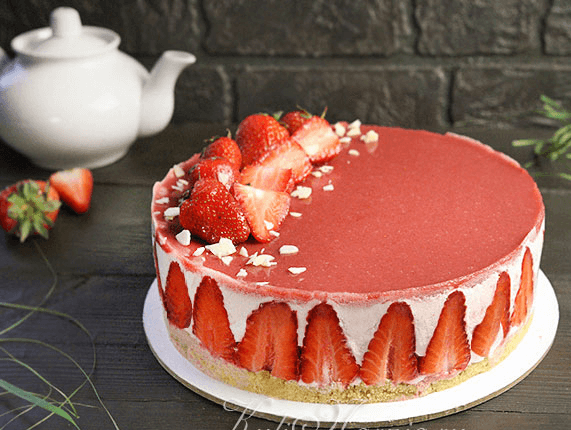

Клубничный чизкейк
Чизке́йк ( «сырный пирог», «творожный пирог») — блюдо европейской и американской кухни, представляющее собой сыросодержащий десерт от творожной запеканки до суфле. Хотя данное блюдо и называют тортом или пирогом (которые в своём составе обычно имеют бисквит), чизкейк не бисквитный десерт: его основанием чаще всего являются толчёное песочное печенье. Основная часть чизкейка, начинка — Для чизкейка чаще всего используют сливочный сыр Филадельфия, но также могут использоваться другие виды: мягкий творог, рикотта, маскарпоне (ит.), нёшатель (фр.) или сырный кварк (нем.). Родиной чизкейка считается Древняя Греция, а интернациональную популярность пирог получил в США.
 вот рецепт